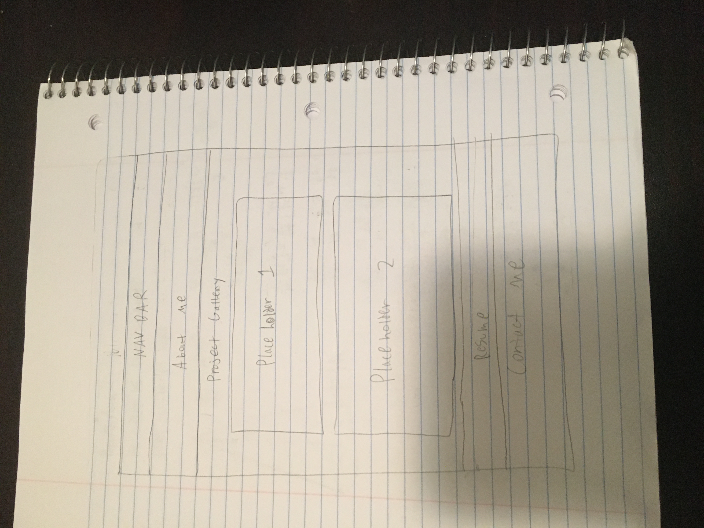

Currently my goal for this project is to get the design completed for my portfolio webpage so that I can later add projects to it. The audience I am trying to get are employers as well as anyone who can spread the word about what I have created so I can make a name for myself. I plan on adding a navigation bar at the top of the page so people don't have to scroll all the way down to see certain content. I also need a header to grab people's attention immediately as they load the page. Adding a big header with an image would usually grab someone's attention. I want my layout to be very straight forward and easy for the user to see what everything is supposed to be. Below is the original design for my webpage layout.

All images used for this site were taken by me,
however I used a font from google fonts called secular one.
The link to that is right here
https://fonts.google.com/specimen/Secular+One?query=secular
For the image dimensions I decided to use the vw unit when sizing because the webpage needs to be responsive so by using vws, the images will keep their size relative to the screen size and not become too big or too small. For updates for my final version, I plan on possibly adding a drop down menu for mobile devices and keep the bar for desktop so it looks a bit more compact on mobile devices. As I add projects to the gallery I plan on making the project links going to either the github repository I made for it or making a different place for me to present those projects.